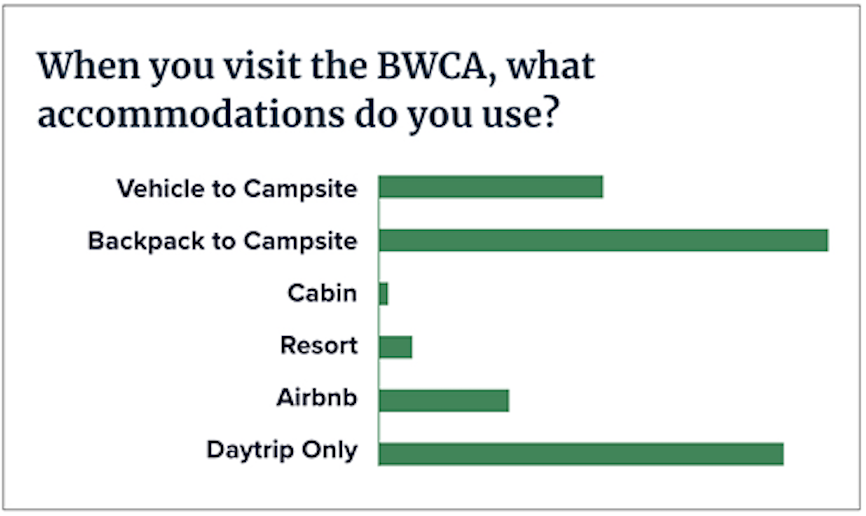

The Border Route Trail Association maintains and promotes the Border Route Trail, a hiking trail located along the U.S./Canada border in northern Minnesota. Staffed entirely by volunteers, their resources are put primarily into trail work, meaning the website sometimes takes a backseat. This responsive web redesign realigns the functionality and look of the site with their users and mission, and provides a roadmap for BRTA to use moving forward. Due to Covid-19, the entire project was done remotely via Zoom, Slack, and Google Drive. Here is my team and our roles:
Chris Van Ert (me)
UX Research: site heuristics, survey, interviews, user persona, user journey, user flow, user testing
UI Design: pencil sketches, style tile, wireframes, prototypes, illustration, interaction and animation
Lillian Kelly
UX Research: site heuristics, survey, interviews, user persona, user journey, user testing
UI Design: style tile, input on layout and UI features
Brianna Fitzgerald
UX Research: site heuristics, survey, interviews, user persona, user testing, competitive analysis
UI Design: style tile, input on layout and UI features
The existing BRT site has some user experience issues and is in need of updates. The site isn’t mobile-ready, contains broken links and maps, and forces the user to go to other sites for info/ product, or, makes them print out forms and mail checks instead of having a storefront for online purchases. Despite some aesthetic and responsive shortcomings, the information architecture and navigation are intuitive and logical, and can remain as the template for the redesign.
Kate is a savvy hiker who wants very clear, concise information in order to plan her route or trip. She wants to be able to enjoy nature somewhere that is quiet and beautiful. Kate is busy, and can only get to the BRT once a year, so she needs to get the most out of her available time.
A survey was sent to people who have been to the Boundary Waters before, asking how they plan, what tools they use, how long they visit, etc. Similar, but open-ended questions were used to interview BWCA enthusiasts to gain more insights.
How do you decide your route?
If it’s a family trip, sometimes we will do a favorite route we’ve done before. More often than not, we try to find something new. It usually starts by looking at maps for locations that seem interesting as far as terrain and other features.
What tools do you use to plan?
Old school maps, websites, guidebooks. For apps and websites, we use alltrails, recreation.gov, MN DNR, and other local sites depending on where we are going.
What is the main point/idea that the BRT website should convey to users?
The primary goals of the website are to provide information about hiking the trail (where to get maps and permits, where to park, what the conditions are, etc), and for volunteers to find out about trail clearing trips and sign up for them. A secondary goal is to raise general awareness and interest in the trail and the BRTA organization.
The research confirmed what people wanted from the website: clear and concise maps overviewing routes, campsites, and what is required to accomplish those routes. The site owner wanted to add immersive photos of the BRT/BWCA to generate excitment. Adding their Facebook group feed was also a priority. The majority of BRT hikers either camped on trail or did daytrips using a drive-in campsite or Airbnb rental as a base camp. Google analytics for the existing BRT site show users are looking for maps, general info, and a trail guide as their top priorities.
Alltrails.com was a site that most of our survey/interview respondents used in their planning. The site has descriptions of the trail, some basic maps, and user comments. Advanced maps and other features are available to members only.
Digitize the BRT Trail Guidebook and maps, and make them available online to BRT members. Make a PDF Guidebook version available for download since the print copy is in short supply/out of print. Utilize Facebook/Meetup feeds for trail condition and general news updates.
Kate, is trying to plan a trip to the Border Route Trail but doesn’t know where to start. A friend directs her to the new BRT site, where she finds maps, trail and camping info, packing lists, and other local info that helps her plan a successful trip.
By putting the Trail Guidebook information and maps on the website—instead of being externally linked—users stay on the BRT site longer. The only part of the trip planning process that requires the user to leave is to obtain a BWCA permit if necessary. This was set up as the last step in the user flow, to keep users on the BRT site as long as possible.
Using a mobile-first approach, landing and secondary pages were sketched out, as were navigation and content UI elements, keeping in mind the site owner’s request to use more photography.
In our interviews, the stakeholders said that they wanted to show more photography, so that became the primary design element. An earthy/forest color palette was created to complement the photos. The BRT logo was updated so it would be responsive, and a simplified version was made that could be used at smaller sizes where the text might drop out.
The first round of mobile wireframes lets the photos set the tone, with less text on the home screen, and more text on the secondary screens as the user clicks through. The secondary screens use cards to organize and separate the content. The whitespace is kept consistent to let everything breathe for better usability.

Desktop wireframes were based on the mobile layouts, using cards and other UI elements that can be scaled responsively for a more consistent user experience across platforms.


Locate the trail guide, trail maps, and campsite information. Completing the tasks in under 40 seconds was considered to be a success.
Users were also tasked to “register” for the featured trail clearing trip. This was not a main navigation option, so users had to find this on their own. 4 out of 5 users were able to successfuly complete this task.

Unified colors in navbar/dropdown
Added footer tree pattern to top navbar (cut out)
Added subtle map background to desktop version
Added breadcrumb links
Added home link
Increased line spacing in slider menu
Color consistency


Click and drag with cursor (drag gesture on mobile) to scroll the prototype.
Desktop prototype best viewed in its own tab or screen.
Click HERE for desktop prototype.


The existing Border Route Trail website had several opportunities for updates and improvements. First and foremost was to make it responsive, and to approach the redesign from a mobile-first perspective. The stakeholder interview provided insights into what the typical user came to the site for, and the user interviews and surveys provided the information needed to plan the user persona, journey map, user flow and initial wireframes.
After a few rounds of user testing and iterations, we developed hi-fidelity prototypes that offered multiple paths for a user to get the information they needed to plan a trip, while also benefiting the stakeholders by keeping the user engaged on the BRT site by putting as much of the information they were looking for as possible on the site, eliminating external links when appropriate.
The end result is a responsive site with a refreshed look, using photography and information that engages, assists, and inspires the user to plan a trip to the Border Route Trail. The BRT Association can build this out further with a login for members that provides premium features, such as full- access to the Trail Guidebook and maps, and integrating a storefront to sell merchandise and allow users to pay for membership, work trip fees, or to make charitable contributions.
Depending on which options the Border Route Trail Association choose to implement, there are are various key performance indicators that could be used to measure the effectiveness of the redesign.
1. New and Renewing Membership Activity
By making membership application, renewal, and payment available online, the process is streamlined for the user and can be done in real-time, rather than needing to send any information or payment via mail. This should result in increased memberships, renewals, and inquiries.
2. Storefront Activity
Developing an online storefront is key to point one above, but also to help drive sales of the BRT Trail Guidebook, maps, and other merchandise. This eliminates the need for users to print out forms, mail payment, or wait for a response from someone at the BRT. The storefront would also provide a convenient method for people to donate money to the organization.
3. Advertising Revenue/Business Partner Synergies
Track sales and referal generation with business sponsors/partners. Create ways to benefit each other with ads or info on the site and social media.